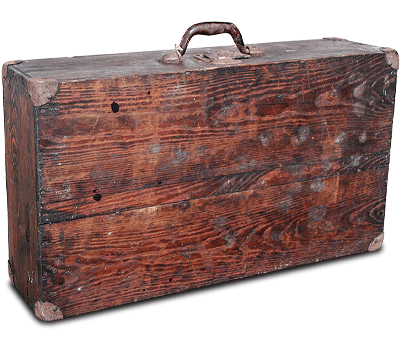

J. Ascaso was born in a small village in the Huesca mountains. He was always a man of great enterprising spirit, and moving to the big city was his only opportunity to better himself. He left his village and moved to Barcelona with 3,000 pesetas in his pocket and a mind full of ideas. In the 1950s, espresso was becoming popular in Spain and all over Europe. In Barcelona, in particular, its popularity saw the growth of a thriving coffee-based industry.
In 1950, J. Ascaso started working for a company supplying chrome-plated espresso machine parts. From 1952 to 1962 J. Ascaso worked on the Gaggia production line, making parts for the world-renowned coffee machine company.
Other coffee machine manufacturers came onto the market. The number of installed espresso machines was ever greater and there was a growing need for maintenance and repair services. J. Ascaso decided to manufacture components for all the coffee machines on the market at that time.
Once the difficult early days were over, the company hired a sales representative who introduced Ascaso to the world of professional distributors and mechanics, and, with a basic grasp of o-ring seals, filter holders, steam valves and heating elements, travelled the length and breadth of Spain, showing the various products to local technicians.
In 1962, Jesús Ascaso started his own business, producing and distributing spare parts for espresso coffee machines. Currently, Ascaso sells its products in over 80 countries and continues to grow, creating new business divisions such as the manufacture of espresso machines.
JL. Ascaso, the founder's son, is the man behind Ascaso Factory's diversification in recent years. He settled on the manufacture of espresso machines to bring together technical knowledge and espresso culture.
The 'for coffee lovers' philosophy was born.
Jesús Ascaso starts work at Gaggia Spain. This is his first contact with the world of espresso.
He founds his own company. He dedicates his efforts to the design, manufacture, and sale of spare parts for coffee machines.
Change of facilities.
Expansion into the international market.
Presentation of the general catalogue with over 8,000 products.
A new change of facilities (3,000 m²), with the catalogue extended to over 15,000 products.
The idea of manufacturing espresso machines comes from José Luis Ascaso.
ISO 9001 certification awarded.
Extension of facilities, with a presence in over 50 countries.
The Spare Parts Division has over 23,000 products in its catalogue.
Coffee Machines Division: 4 lines of coffee machines, 1 line of coffee grinders.
The Spare Parts Division: over 50,000 products.
Coffee Machines Division: consolidates the company's international presence, with high-quality products which combine the latest technology and traditional craft methods.
The Spare Parts Division:More than 80,000 products
Coffee Machines Division: Manufacturing 6 lines of coffee machinesand 3 coffee grinder. Ascaso Factory opens a new coffee machine factory in Gavà with a floor area of over 8,000 m² dedicated to the worlds of espresso and restaurants and catering.
The Spare Parts Division:Over 90,000 products, with constant improvements being made to the online service
Coffee Machines Division: Launches its new range of professional Bar and Barista models.
The company's ISO 9001 quality management certification is renewed (15 years).
Spare Parts Division: 110,000 units in stock. More brands (over 700 manufacturers). Updated online catalogue. Opening of offices in Madrid.
Machinery Division: International expansion continues (80 countries). New technologies, new products and a philosophy based on quality allows us to continue to consolidate the brand in the world market.
Ascaso Factory consists of two divisions:
D.N.V. (Det Norske Veritas) has certified Ascaso Factory in accordance with the ISO 9001 standard.
Implementing quality is much more than just making a good product and giving attentive service. Ours is a new way of doing things, which covers the whole organisation. This is how we understand it and want to demonstrate it.
The aim is to ensure overall quality: today, our products are subject to strict testing by Internal Quality, while our services are systematized in processes that allow us to improve turnaround times, avoid mistakes, increase competitiveness, improve, etc.
This certification culminates a process of implementing a system that ensures the quality that is a key part of the Ascaso Factory strategic plan.

Tel. +34 93 377 64 11 | Fax. +34 93
377 98 03 | ascaso@ascaso.com | Energía, 39-41, Pol. Ind. Famadas 08940 Cornellá Barcelona -
ES
Cookie policy · Legal notice · ©2017 Ascaso Factory SLU